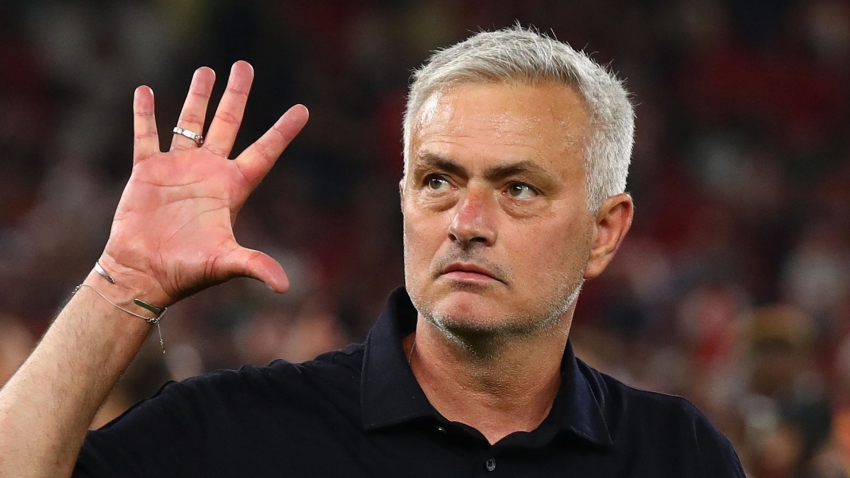

Some Of His Most Incredible Teammates

John Terry
Former Chelsea and England Defender
He Played The Most Matches and Minutes Alongside Didier Drogba (320 and 21,997 respectively).
Frank Lampard
Former Chelsea and England Midfielder
They Had A Joint Goal Participation Of 57.
Didier Zokora
Former Racing Genk, Tottenham And Ivory Coast Midfielder
He Played The Most International Matches Alongside Didier Didier Drogba(75). But Funnily Enough Didn't Combine For Any Goals.

Jose Mourinho
Football Coach(Still Active)
He Coached Drogba For 186 Games, Playing A Total Of 12,228 minutes. He Scored 73 Goals And Had 38 Assists Under Him